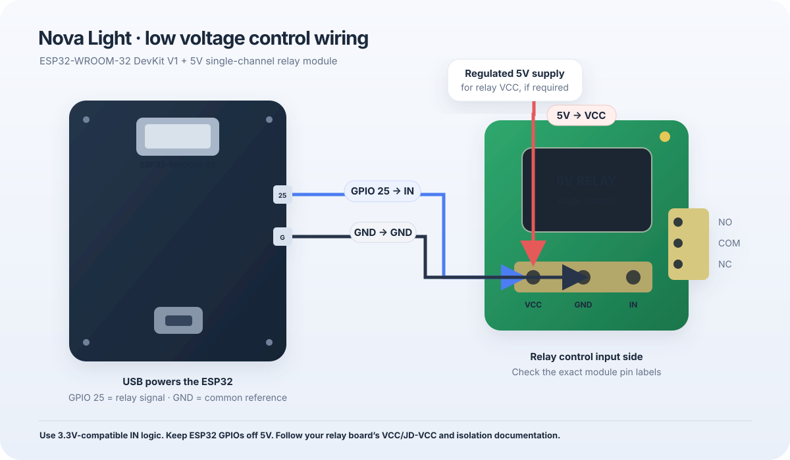

Nova Light · Setup
Bring your light online.
This guide covers the ESP32 firmware and local dashboard. The public GitHub Pages site is the project home; the ESP32 hosts the live controls on your Wi-Fi.
1. Wire the control side
Connect the relay input to GPIO 25. Power the ESP32 by USB and give the relay module an appropriate 5V supply.

| ESP32 / supply | Relay terminal | Detail |
|---|---|---|
GPIO 25 | IN / SIG | Relay control output. |
GND | GND | Common reference when required by the relay input circuit. |
| Regulated 5V | VCC | Use a supply that meets the module's current requirement. |
| USB | ESP32 power | Avoid joining separate 5V rails unless their documentation allows it. |
Confirm that the relay input accepts 3.3V logic. GPIO 25 starts configured OFF; the firmware defaults to active-LOW. Set
RELAY_ACTIVE_LEVEL to HIGH only if the relay module specifies active-HIGH behavior. Keep 5V off ESP32 GPIO pins. For mains loads, use a suitable enclosed, rated assembly and have load wiring handled by a qualified electrician.2. Prepare Arduino IDE
- Install Arduino IDE 2.x.
- Open Boards Manager and install esp32 by Espressif Systems.
- Open
outputs/NovaLightESP32/firmware/NovaLight/NovaLight.ino. Keepdashboard_html.handsecrets.hbeside it. - Copy
secrets.example.htosecrets.hin that folder, then fill in your 2.4GHz home Wi-Fi details. The local secrets file is git-ignored. - Select DOIT ESP32 DEVKIT V1 or ESP32 Dev Module and the connected serial port.
3. Upload and open the controller
- Connect the ESP32 with a data-capable USB cable and click Upload.
- If upload stalls at “Connecting…”, hold the board's BOOT button until writing begins.
- Open Serial Monitor at 115200 baud. Copy the IP printed after Wi-Fi connects.
- Return to the Nova Light home page, replace the sample address with the device IP, and open its dashboard. Your browser device must be on the same Wi-Fi.
http://192.168.1.42/
The firmware includes the page in flash; no LittleFS or SPIFFS upload is needed.
4. Set up schedules
- The initial schedule times are 6:40 PM ON and 6:40 AM OFF; scheduling is disabled until you enable it.
- Choose times in the dashboard and save. Times display in 12-hour format and are stored on the ESP32.
- NTP uses Asia/Kolkata (UTC+5:30). Scheduling waits until the clock synchronizes; the web control can still be used while time is unavailable.
- Usage totals and the latest activity events are saved in Preferences and survive restart.
5. Troubleshoot
- No page: check the IP in Serial Monitor and ensure the browser and ESP32 share the same network. Some guest networks isolate clients.
- No time: confirm Wi-Fi and that the network permits NTP requests.
- Relay does not switch: check module supply, signal polarity, ground requirements, GPIO 25 to IN, and 3.3V input compatibility. A relay indicator alone does not prove its coil or contacts operate.
- Test safely: start with unloaded relay contacts and a low-voltage test load. Do not connect mains wiring while powered.